Niveau 1 —
En venant sur Terre, Vegeta avait pour objectif de trouver les boules de cristal mais il avait un deuxième celui d'éliminer Goku.C'est comme ça qu'un combat s'engage entre Vegeta et Goku accompagné de Piccolo. A la fin du combat, alors qu'il allait en finir avec Goku, Yajirobé le blesse et Vegeta a faillu succomber à ses blessures, il dut s'enfuir à bord de sa navette.
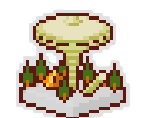
Personnages
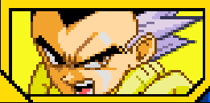
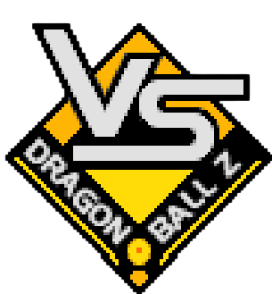

Niveau 2 —
Vegeta après sa défaite, part sur Namek et part en quête des boules de cristal, après avoir apprit que Freezer y allait aussi, en arrivant sur Namek, Vegeta trouva les sbires de Freezer et les détruisit. Irrité par les agissements du prince des Saiyans, Freezer fit venir le Commmando Ginyu, Vegeta est rejoint par Gohan et Krilin, prêts à affronter les forces de Freezer. Goku arriva également et se fit prendra son corps par Ginyu avec sa technique d'échange de corps. Après ce combat, grâce à Vegeta, Goku a récupéré son corps. Pendant que Goku récupère de son combat, Freezer n'est pas là.
Débloque Ginyu comme personnage jouable.

Personnages

What If —
Vegeta a pu vaincre C17 et C18 après un long combat. Bulma créea une machine pour Trunks afin de pacifier son époque. Toutefois il alla voir Vegeta, pour se battre avec lui. Voyant qu'il était aussi fort que le "destructeur de la légende" dont on lui avait parlé, le jeune homme prit la fuite. Vegeta intrigué suivit Trunks, mais Goku l'interrompt et lui demanda au sujet de Trunks, il répondit que ce Trunks estime n'avoir jamais vu Vegeta, dés qu'il l'a vu, il voulait se battre.

Condition
Battre C-18 en faisant un Perfect .
Personnages

What If —
Troublé par ce que Vegeta a raconté au sujet de ce Trunks, Goku alla à sa rencontre. Etrangement face à Goku, Trunks ne montre aucune hostilité et raconta son histoire : il venait d'un autre futur, un futur où Vegeta met un terme à l'existence des cyborgs et ensuite vient à bout de Goku. Désormais sans ennemis, à l'image des cyborgs, il détruisait le monde et voyant qu'il n'avait plus aucun ennemi sur Terre, il est parti dans l'espace. Goku entend ceci fut choqué d'apprendre cette version de l'histoire et rassura Trunks en disant que ça ne ressemble pas à Vegeta, tout en rajoutant que pour que ce futur se concrétise il faut qu'il puisse le vaincre. Après avoir parlé tous deux s'en allèrent voir Vegeta et un nouveau combat reprit et les deux passèrent en Super Saiyan, Vegeta rajoute que s'il n'y avait point d'ennemi il s'ennuierait, de son côté Goku tenta de les arrêter car ils détruiraient tout, c'est à ce moment que Vegeta décida d'affronter Goku à la place de Trunks. Après un combat assez violent, Bulma arrive voulant assister au combat, mais dans le feu de l'action, elle a failli se prendre une attaque énergétique et contre toute attente, Vegeta la bloqua et put protéger Bulma. Trunks choqué par l'action de Vegeta, apprit de la bouche de Goku que Vegeta n'était nul autre que son père, la Bulma du futur sa mère ne voulait pas faire de la peine à son fils, lui cacha l'identité de son père, Trunks décida directement de retourner dans le futur et d'essayer de faire confiance à son père. C'est ainsi que cet autre Trunks retourna dans son autre futur. Que se passera t-il ? Nul ne le sait.
Débloque Boo comme personnage jouable.
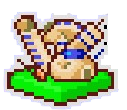
Condition
Terminer le combat contre Trunks .
Personnages
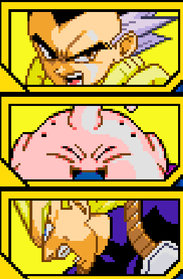
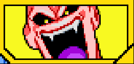
Niveau 3 —
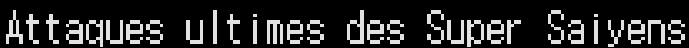
Grâce à Goku, Freezer fut vaincu, mais il revint sur Terre, avec un corps mécanique prêt à attaquer la Terre. Cependant un jeune homme venant du futur nommé Trunks annonce le danger que constituera les cyborgs à l'avenir, 3 ans plus tard les gueriers sont prêts, dont Vegeta qui a débloqué le Super Saiyan. Confiant dans ses capacités, il part à la rencontre des cyborgs et affronte C18.
Débloque Vegeta(Super Saiyan) comme personnage jouable
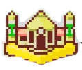
Personnages

Niveau 4 —
A la fin du combat face à C18, il était impuissant et dut s'entraîner d'arrache-pied pour réussir à surmonter cette humiliation. Alors que pendant que Vegeta et Trunks sont dans la Salle de l'Esprit et du Temps, Piccolo combattait les cyborgs, Cell fit son apparition et absorba C17. C'est alors que Vegeta fraîchement ressorti de la Salle spatio-temporelle, était confiant à l'idée de battre Cell.
Débloque l'Attaque Ultime "Big Bang Explosif"

Personnages
Niveau 5 —
Aveuglé par son orgueil, Vegeta laissa absorbé C18 pour mettre à Cell d'avoir sa forme parfaite et d'avoir selon Vegeta "un bon combat", qui finalement se résolut par une humiliation pour le prince, mais heuresement il aida Gohan à vaincre Cell, lors du Kamehameha père-fils. 7 ans de paix étaient passées et Vegeta apprit que Goku reviendrait pour 24h pour participer au Tenkaichi Budokai, c'est alors que lui aussivoulait particper pour affronter Goku dans le tournoi, mais tout ne se passa pas comme prévu, le sorcier Babidi avait volé l'énergie de Gohan pour faire revivre Boo et en plus il avait manipulé le coeur prince des Saiyans en ravivant les ténèbres au fond de lui. Animé uniquement par le combat contre Goku, il força son rival de toujours à l'affronter. Après ce combat, Vegeta décida de se sacrifier en s'explosant pour vaincre Boo, mais en vain. Adieu Fier Guerrier ...
Débloque l'Attaque Ultime de Vegeta (Mauvais) "Explosion finale" et Babidi comme personnage de support.
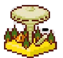
Personnages
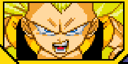
What If —
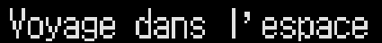
Après la défaite explosive de Cell face à Vegeta, le prince des Saiyans décida de se reposer sur ses lauriers, le monde est en paix et Vegeta s'y fait. En allant en ville avec sa famille, il rencontra Goku et Gohan qui lui feront remarqué qu'il n'est pas au top de sa forme, Vegeta énervé par cette remarque décide de montrer à Gohan maintenant ado, via un combat, s'il est vraiment aussi mal en point qu'il le prétend. Durant le combat, Gohan dit ouvertement devant Vegeta qu'il n'est plus aussi fort qu'avant, alors sous la remarque de Gohan, Vegeta essaya de se transformer en Super Saiyan, à sa grande surprise, Vegeta n'arrivait plus à se transformer en Super Saiyan.
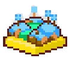
Condition
Battre Cell 2e Forme en lui infligeant un Ultimate Ko.
Personnages
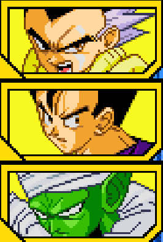

What If —
Après la défaite explosive de Cell face à Vegeta, le prince des Saiyans décida de se reposer sur ses lauriers, le monde est en paix et Vegeta s'y fait. En allant en ville avec sa famille, il rencontra Goku et Gohan qui lui feront remarqué qu'il n'est pas au top de sa forme, Vegeta énervé par cette remarque décide de montrer à Gohan maintenant ado, via un combat, s'il est vraiment aussi mal en point qu'il le prétend. Durant le combat, Gohan dit ouvertement devant Vegeta qu'il n'est plus aussi fort qu'avant, alors sous la remarque de Gohan, Vegeta essaya de se transformer en Super Saiyan, à sa grande surprise, Vegeta n'arrivait plus à se transformer en Super Saiyan.
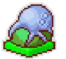
Condition
Battre Cell 2e Forme en lui infligeant un Ultimate Ko.
Personnages
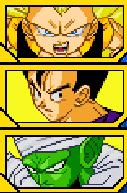
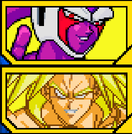
Niveau 6 —
Alors que la bataille face à Boo battait son plein, Gohan et Gotenks avaient perdu face à Boo et se firent absorbé, il est devenu trop puissant, vegeta fut ramené pour 24h sur Terre et Goku reçut l'énergie du Vieux Kaioshin et partent combattre Boo, mais même eux n'étaient pas assez forts à deux pour vaincre le Majin .Après avoir retirer les enfants du corps de Boo, le démon détruisit la Terre. Vegeta et les autres se téléportèrent dans le monde des Kaioshins et demanda à Goku de faire un Genkidama, le temps Vegeta que rettient Boo du mieux qu'il peut, mais il y avait également Boo et Mr Satan pour aider à convaincre les terriens et retenir Boo .En combattant Boo et voyant le mpal que Goku se donne pour réussir, il se rendit compte que lui il se bat pour sa fierté alors que Goku se bat pour l'avenir de l'Univers. Après que Goku demanda avec Mr Satan aux terriens de donner leur énergie, le Super Genkidama fut prêt et éradiqua Boo complètement. Ce combat fit comprendre à Vegeta le vrai sens de la force et continua son entraînement pour un jour surpasser Kakarot.
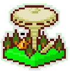
Personnages
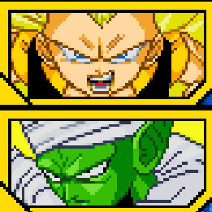
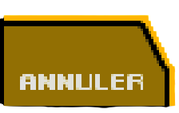